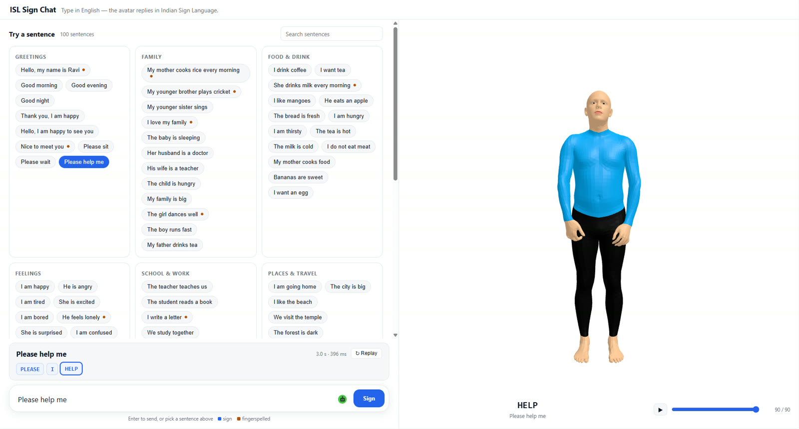

Type any English sentence, or pick one of 100 example sentences: it is translated into ISL glosses, their keyposes are retrieved from the Widget Dictionary and interpolated live, and the avatar signs it while the gloss being signed is highlighted. Words without a sign are fingerspelled.
Open ISL Sign Chat ↗The ISL Sign Chat runs on a server inside the IIIT Hyderabad network, so it opens in its own tab and is reachable only from that network.
